wf4ni for Resting State fMRI processingvignettes/rsfmri.Rmd
rsfmri.RmdIn this vignette, we’re going to develop a pipeline (workflow) to build the functional connectome from a resting state fMRI volume, associated to an atlas, using the wf4ni package.
As a model, we have used the steps mentioned in the Python/FSL Resting State Pipeline from the Brain Imaging and Analysis Center:
To demonstrate the flexibility of wf4ni, we’ll use different R packages to perform several of the above steps.
It must be noted that the philosophy of wf4ni is to separate the pipeline logic from its implementation. So, the same workflow could be used just changing, if needed, the implementation of any (or all) of the steps above.
The organization of this vignette is as follows. First, we’ll describe the dependencies or packages needed to run the workflow. Later, we’ll describe the workflow, step by step, without presenting the actual implementation of the functions used. Then, we’ll use some sample data to run an experiment with the workflow, presenting its results. We’ll end the vignette with an annex in which we’ll present the actual implementation of the functions.
We consider two types of requirements: packages needed to perform the key steps in the workflow and data which may be necessary at any step of the computation.
Obviously, to build the workflow, we need the wf4ni package:
library(wf4ni)
#>
#> Attaching package: 'wf4ni'
#> The following object is masked from 'package:base':
#>
#> mergeThe following packages are needed in some points of the pipeline:
library(tidyverse)
library(neurobase)
library(fslr)
library(readr)
library(oro.nifti)
library(ANTsR)
library(signal)
library(scales)
library(RColorBrewer)
library(tidyr)
library(dplyr)
library(ggplot2)The tidyverse simplifies some of the functions and makes code more legible. Packages fslr, ANTsR, and signal are used in different parts of the code. neurobase, oro.nifti and readr are used in input/output tasks and to show orthographic plots of nifti volumes. Packages RColorBrewer, tidyr, dplyr and ggplot2 are used to visualize the results.
The additional resources, such as the atlas used in this vignette to compute the functional connectome (AAL v4), or the WM/CSF probability map templates, are from the Python/FSL Resting State Pipeline, mentioned above.
The diffusion workflow will be a NIflow object. To create such object, one needs to provide a name, a work_dir where to store temporary results, and the name of the inputs needed to execute the workflow. In this case, our pipeline will need:
fmri_flow <- NIflow$new(name = "fmri",
work_dir = "~/flow/fmri",
inputs = c("T1", "BOLD", "TR", "atlas"))There will be processes exclusively acting on the fMRI image, whereas others will act on the T1 image, for different purposes. Having a T1 image will help normalize the functional image into MNI space.
The first action to take is to correct the functional image for slice timing, using fslr package:
Adding this step to the flow is straightforward:
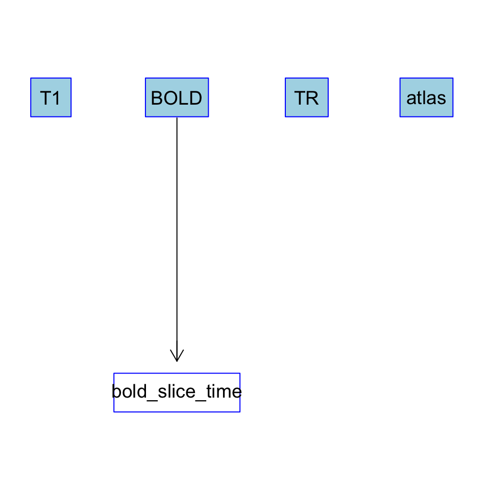
The next step is correcting the motion between different acquisitions (using fslr), and regress out the effect of the motion in the fMRI signal (using functions from base R):
# run motion correction
correct_motion <- function(bold) {
#...
}
# regressing out motion correction parameters
regress_out_motion <- function(L) {
#...
}Adding these two steps can be made as follows:
fmri_flow %>%
add(what = correct_motion,
inputs = "bold_slice_time",
output = "motion_estimation") %>%
add(what = regress_out_motion,
inputs = "motion_estimation",
output = "bold_motion_regressed")At this point, the partial flow is:
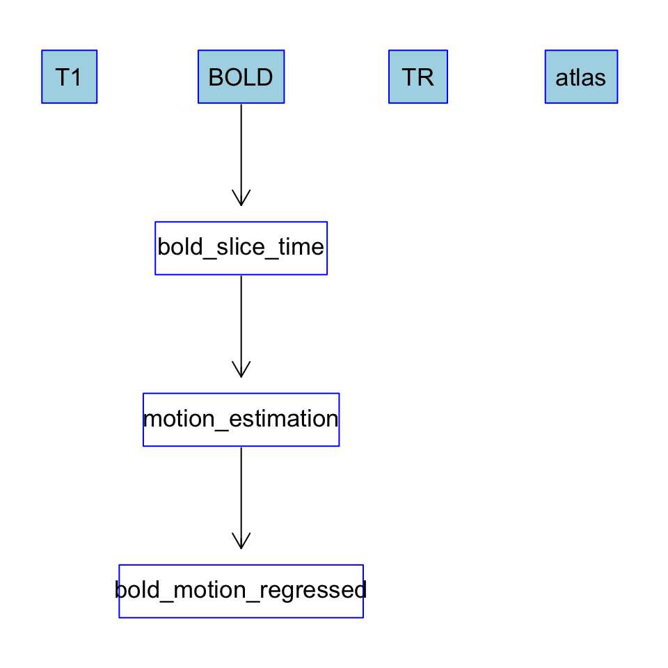
In order to remove the exterior of the brain, we will follow the next actions:
Some of these functions need the fslr package.
#first create mean_func
compute_mean_func <- function(image) {
#...
}
#now skull strip the mean
skull_strip <- function(image) {
#...
}
#now mask full run by results
mask_run <- function(image, mask) {
#...
}We concatenate this functions as follows:
fmri_flow %>%
add(what = compute_mean_func,
inputs = "bold_motion_regressed",
output = "mean_func") %>%
add(what = skull_strip,
inputs = "mean_func",
output = "mean_func_brain") %>%
add(what = mask_run,
inputs = c("bold_motion_regressed", "mean_func_brain"),
output = "bold_masked") %>%
add(what = skull_strip,
inputs = "T1",
output = "T1_brain")Note that we also skull-strip the T1 image. This way, later, we’ll be able to reorient the anatomical image into MNI space.
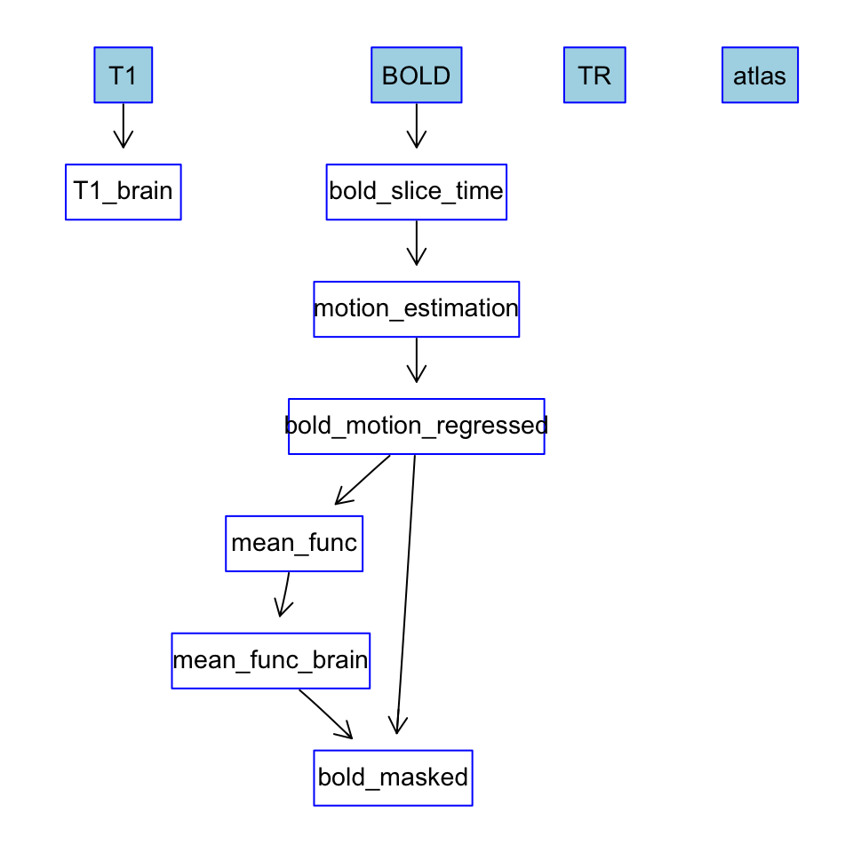
In this step, we reorient both the anaotmical and the functional images into MNI space. We’ll use fslr functions to this end.
# normalize the data
normalize_data <- function(t1_ss, bold_ss) {
#...
}
get_t12std <- function(L) L$t12std_img
get_func2std <- function(L) L$func2std_imgTaking into account the corresponding inputs and outputs, the code to add this functions to the flow is:
fmri_flow %>%
add(what = normalize_data,
inputs = c("T1_brain", "bold_masked"),
output = "all_normalized") %>%
add(what = get_t12std,
inputs = "all_normalized",
output = "t12std") %>%
add(what = get_func2std,
inputs = "all_normalized",
output = "func2std")The flow up-to-now is as follows:
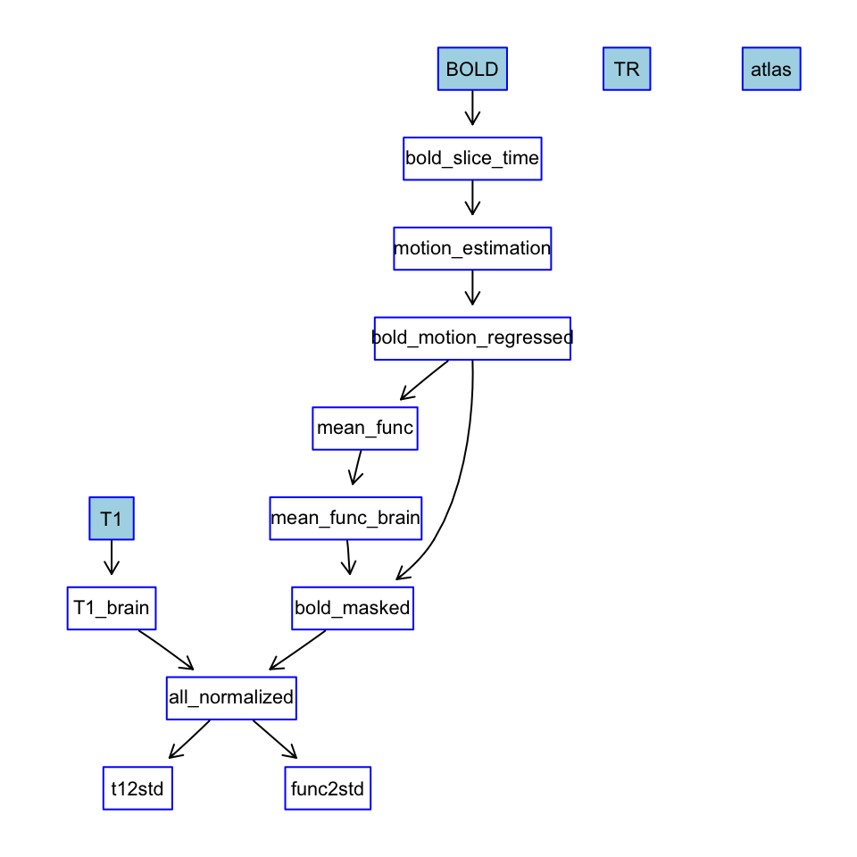
To regress out CSF and WM signal, we use base R functions. The CSF and WM maps are obtained from the external resources mentioned above.
We add this step to the flow:
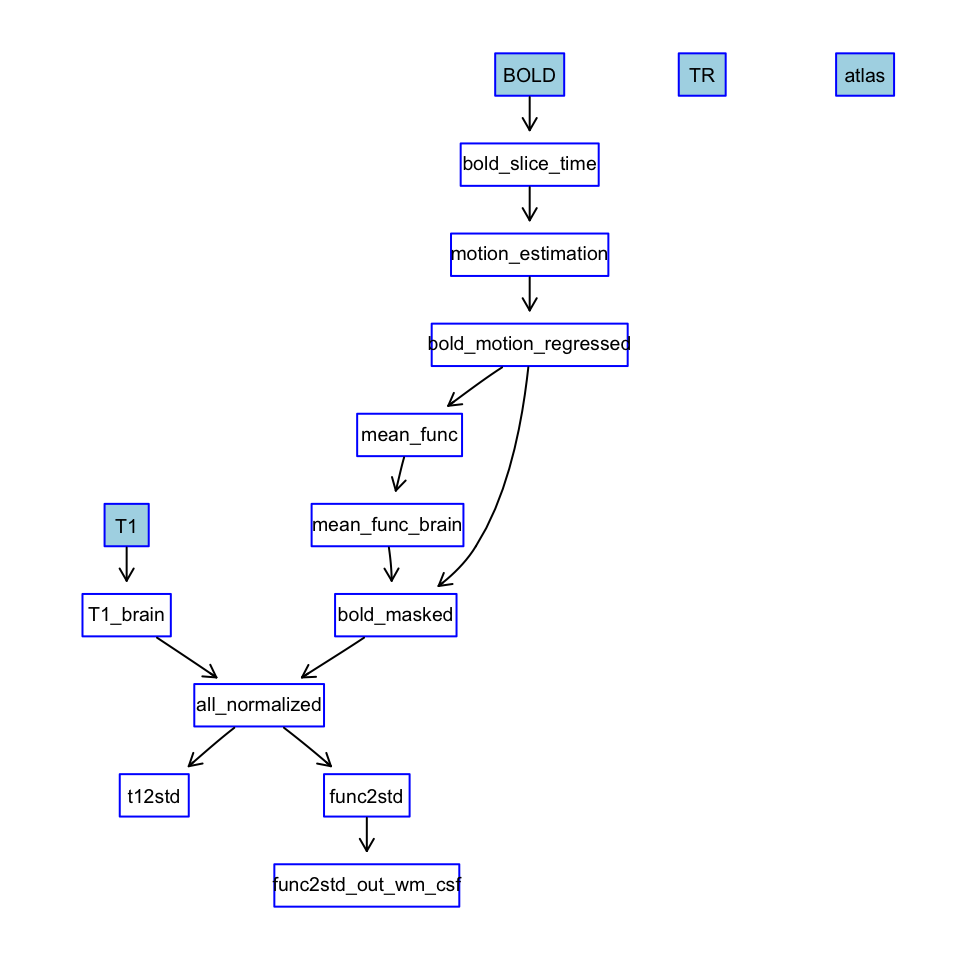
We’ll use functions from the ANTsR package to filter the functional image. We’ll also need the TR of the acquisition as input for this step.
This way we add the function to the flow_
fmri_flow %>%
add(what = filter_func,
inputs = c("func2std_out_wm_csf", "TR"),
output = "func_filtered")The partial flow is now:
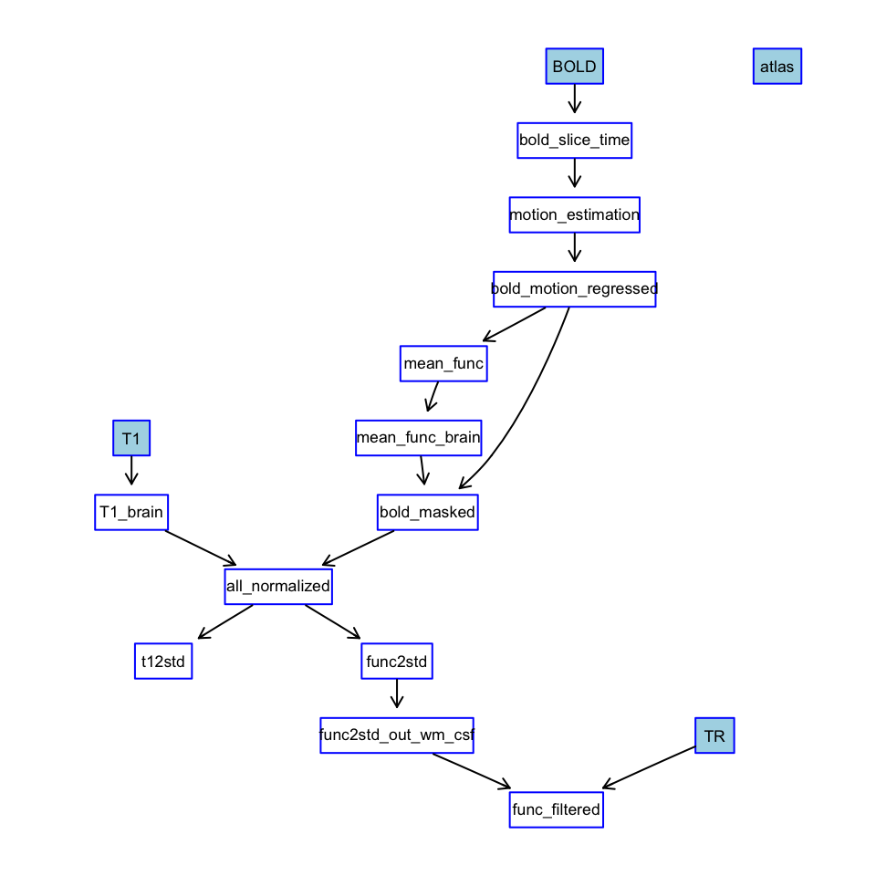
First, we extract a functional time series for each of the regions of interest in the labelled atlas, as the mean of the signal, at each timepoint, over all voxels of the corresponding region.
Later, we compute the correlation of those time series to extract the functional connectome associated to the labelling.
# do the parcellation
extract_time_series <- function(bold, corr_label) {
#...
}
# do the correlation
compute_correlation <- function(time_series) {
#...
}We add this last steps to the flow as follows:
With these final additions, the complete pipeline is as follows:
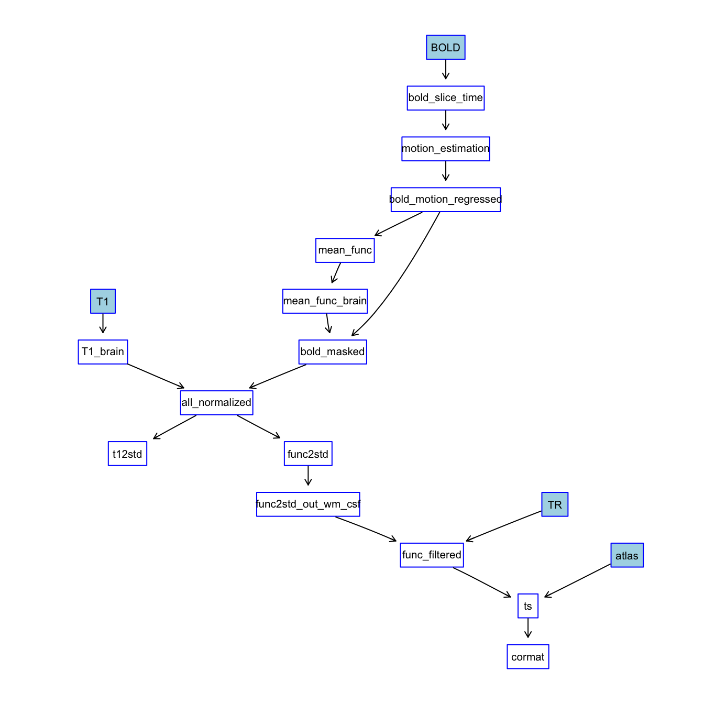
We can also obtain a brief summary of the flow by typing:
summary(fmri_flow)
#> NIflow object with:
#> name: fmri
#> inputs: T1, BOLD, TR, atlas
#> outputs: bold_slice_time, motion_estimation, bold_motion_regressed, mean_func, mean_func_brain, bold_masked, T1_brain, all_normalized, t12std, func2std, func2std_out_wm_csf, func_filtered, ts, cormat
#> Currently using 787.27 kB of memory.
#> Summary of processes:
#> bold_slice_time needs BOLD as inputs.
#> motion_estimation needs bold_slice_time as inputs.
#> bold_motion_regressed needs motion_estimation as inputs.
#> mean_func needs bold_motion_regressed as inputs.
#> mean_func_brain needs mean_func as inputs.
#> bold_masked needs bold_motion_regressed, mean_func_brain as inputs.
#> T1_brain needs T1 as inputs.
#> all_normalized needs T1_brain, bold_masked as inputs.
#> t12std needs all_normalized as inputs.
#> func2std needs all_normalized as inputs.
#> func2std_out_wm_csf needs func2std as inputs.
#> func_filtered needs func2std_out_wm_csf, TR as inputs.
#> ts needs func_filtered, atlas as inputs.
#> cormat needs ts as inputs.To illustrate how this workflow can be used, let us suppose that we have all the functions mentioned before already implemented (an example implementation is given in the Annex), and build the workflow as in the previous steps. We’ll apply this flow to compute the connectome given a rsfMRI image.
We’ll use sample data for the rsfMRI image from openfMRI repositories.
T1_file <- "./resources/rsfMRI/anat.nii.gz"
BOLD_file <- "./resources/rsfMRI/func.nii.gz"
atlas_file <- file.path("./resources/rsfMRI/",
'data', 'aal_MNI_V4.nii')
TR <- 2
res <- fmri_flow$execute(inputs = list(T1 = T1_file,
BOLD = BOLD_file,
TR = TR,
atlas = atlas_file),
desired_outputs = c("mean_func",
"ts",
"cormat"))These are auxiliary functions to plot a connectivity matrix and a time series.
plot_matrix <- function(M) {
color_function <- colour_ramp(brewer.pal(11, "RdBu"))
heatmap(t(M), Rowv = NA, Colv = NA,
col = color_function(seq(0, 1, 0.01)),
scale = "none")
}
plot_time_series <- function(ts) {
# Runs on rows, ROIs in columns
ts <- t(ts) %>% as.data.frame()
n_runs <- nrow(ts)
ts$run <- seq(n_runs)
df <- ts %>%
gather(key = "variable", value = "value", -run)
if (ncol(ts) > 3) {
ggplot(df, aes(x = run, y = value)) +
geom_line(aes(color = variable), size = 1) +
scale_color_brewer(type = "div") +
theme_minimal()
} else {
ggplot(df, aes(x = run, y = value)) +
geom_line(aes(color = variable), size = 1) +
scale_color_brewer(type = "qual") +
theme_minimal()
}
}This is the averaged functional image:
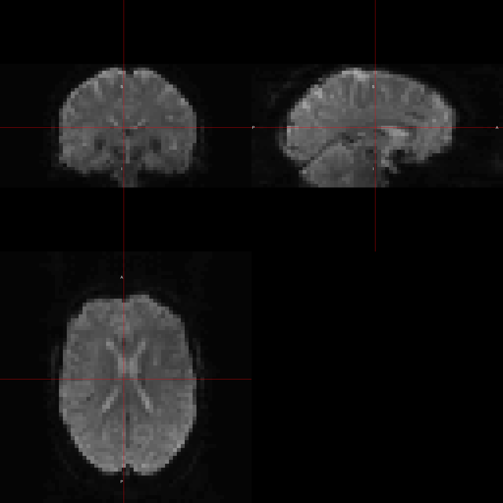
This is the connectome, the normalized correlation matrix representing a graph whose nodes are regions of interest and edge strength is given by the correlation between the time series of the regions.
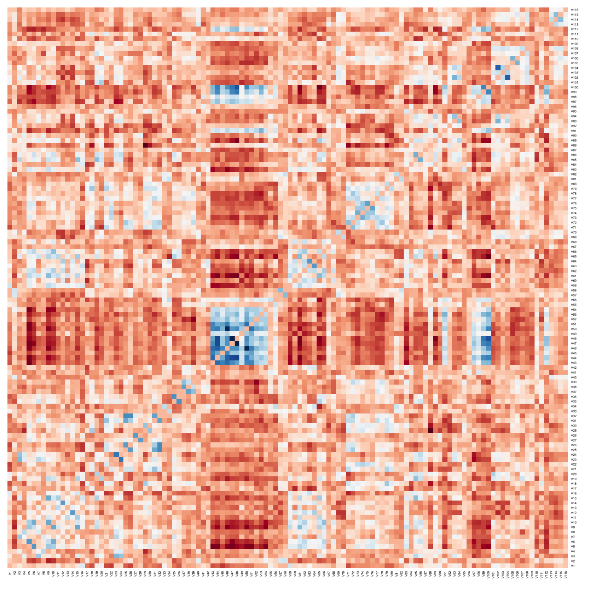
We could plot the computed averaged time series for several regions of interest:
roi_names <- read_tsv(file.path(".", "resources",
"rsfMRI", "data",
"aal_MNI_V4.txt"),
skip = 1,
col_names = FALSE,
col_types = cols())
colnames(roi_names) <- c("index", "name")
time_series <- t(res$ts)
rownames(time_series) <- roi_names$name
plot_time_series(time_series[c(29:30, 41:42), ])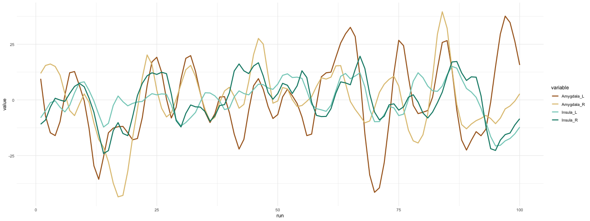
We could compute which two regions have the greater correlation and plot their time series:
# Which two components have the greater correlation
my_ind <- res$cormat %>%
which.max() %>%
arrayInd(.dim = dim(res$cormat))
plot_time_series(time_series[my_ind, ])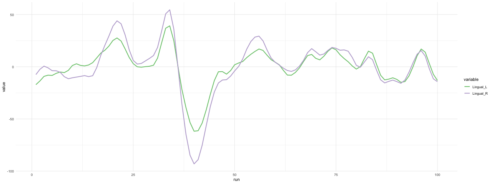
The NIflow object stores internally a log of all the processes that it goes through and the memory used to store its internal results:
#> (2019-04-29 16:11:04) [DEBUG] Adding process with inputs: BOLD and output(s): bold_slice_time
#> (2019-04-29 16:11:04) [DEBUG] Adding process with inputs: bold_slice_time and output(s): motion_estimation
#> (2019-04-29 16:11:04) [DEBUG] Adding process with inputs: motion_estimation and output(s): bold_motion_regressed
#> (2019-04-29 16:11:05) [DEBUG] Adding process with inputs: bold_motion_regressed and output(s): mean_func
#> (2019-04-29 16:11:05) [DEBUG] Adding process with inputs: mean_func and output(s): mean_func_brain
#> (2019-04-29 16:11:05) [DEBUG] Adding process with inputs: bold_motion_regressed, mean_func_brain and output(s): bold_masked
#> (2019-04-29 16:11:05) [DEBUG] Adding process with inputs: T1 and output(s): T1_brain
#> (2019-04-29 16:11:05) [DEBUG] Adding process with inputs: T1_brain, bold_masked and output(s): all_normalized
#> (2019-04-29 16:11:05) [DEBUG] Adding process with inputs: all_normalized and output(s): t12std
#> (2019-04-29 16:11:05) [DEBUG] Adding process with inputs: all_normalized and output(s): func2std
#> (2019-04-29 16:11:05) [DEBUG] Adding process with inputs: func2std and output(s): func2std_out_wm_csf
#> (2019-04-29 16:11:05) [DEBUG] Adding process with inputs: func2std_out_wm_csf, TR and output(s): func_filtered
#> (2019-04-29 16:11:06) [DEBUG] Adding process with inputs: func_filtered, atlas and output(s): ts
#> (2019-04-29 16:11:06) [DEBUG] Adding process with inputs: ts and output(s): cormat
#> (2019-04-29 16:11:08) [DEBUG] Reading input T1 from file ./resources/rsfMRI/anat.nii.gz
#> (2019-04-29 16:11:14) [DEBUG] Reading input BOLD from file ./resources/rsfMRI/func.nii.gz
#> (2019-04-29 16:11:18) [DEBUG] Using provided input TR
#> (2019-04-29 16:11:18) [DEBUG] Reading input atlas from file ./resources/rsfMRI//data/aal_MNI_V4.nii
#> (2019-04-29 16:11:19) [DEBUG] Memory used at init: 146.5 MB
#> (2019-04-29 16:11:19) [DEBUG] Switching tempdir to: /Users/domingo/flow/fmri
#> (2019-04-29 16:11:19) [DEBUG] Computing bold_slice_time...
#> (2019-04-29 16:11:46) [DEBUG] Memory used after computation: 264.48 MB
#> (2019-04-29 16:11:54) [DEBUG] Removed intermediate outputs: BOLD, t12std
#> (2019-04-29 16:11:54) [DEBUG] Memory used after cleanup: 205.49 MB
#> (2019-04-29 16:11:54) [DEBUG] Computing motion_estimation...
#> (2019-04-29 16:12:34) [DEBUG] Memory used after computation: 323.47 MB
#> (2019-04-29 16:12:56) [DEBUG] Removed intermediate outputs: bold_slice_time
#> (2019-04-29 16:12:57) [DEBUG] Memory used after cleanup: 205.49 MB
#> (2019-04-29 16:12:57) [DEBUG] Computing bold_motion_regressed...
#> (2019-04-29 16:13:03) [DEBUG] Memory used after computation: 323.47 MB
#> (2019-04-29 16:13:11) [DEBUG] Removed intermediate outputs: motion_estimation
#> (2019-04-29 16:13:11) [DEBUG] Memory used after cleanup: 205.49 MB
#> (2019-04-29 16:13:11) [DEBUG] Computing mean_func...
#> (2019-04-29 16:13:11) [DEBUG] Memory used after computation: 206.68 MB
#> (2019-04-29 16:13:11) [DEBUG] Computing T1_brain...
#> (2019-04-29 16:13:30) [DEBUG] Memory used after computation: 290.57 MB
#> (2019-04-29 16:13:32) [DEBUG] Removed intermediate outputs: T1
#> (2019-04-29 16:13:32) [DEBUG] Memory used after cleanup: 206.68 MB
#> (2019-04-29 16:13:32) [DEBUG] Computing mean_func_brain...
#> (2019-04-29 16:13:34) [DEBUG] Memory used after computation: 207.86 MB
#> (2019-04-29 16:13:34) [DEBUG] Computing bold_masked...
#> (2019-04-29 16:13:49) [DEBUG] Memory used after computation: 325.84 MB
#> (2019-04-29 16:13:53) [DEBUG] Removed intermediate outputs: bold_motion_regressed, mean_func_brain
#> (2019-04-29 16:13:54) [DEBUG] Memory used after cleanup: 206.68 MB
#> (2019-04-29 16:13:54) [DEBUG] Computing all_normalized...
#> (2019-04-29 16:16:49) [DEBUG] Memory used after computation: 936.01 MB
#> (2019-04-29 16:17:28) [DEBUG] Removed intermediate outputs: bold_masked, T1_brain
#> (2019-04-29 16:17:29) [DEBUG] Memory used after cleanup: 734.15 MB
#> (2019-04-29 16:17:29) [DEBUG] Computing func2std...
#> (2019-04-29 16:17:29) [DEBUG] Memory used after computation: 1.46 GB
#> (2019-04-29 16:18:19) [DEBUG] Computing func2std_out_wm_csf...
#> (2019-04-29 16:19:52) [DEBUG] Memory used after computation: 2.18 GB
#> (2019-04-29 16:20:50) [DEBUG] Removed intermediate outputs: func2std
#> (2019-04-29 16:20:52) [DEBUG] Memory used after cleanup: 1.46 GB
#> (2019-04-29 16:20:52) [DEBUG] Computing func_filtered...
#> (2019-04-29 16:21:51) [DEBUG] Memory used after computation: 2.18 GB
#> (2019-04-29 16:23:22) [DEBUG] Removed intermediate outputs: TR, func2std_out_wm_csf
#> (2019-04-29 16:23:25) [DEBUG] Memory used after cleanup: 1.46 GB
#> (2019-04-29 16:23:25) [DEBUG] Computing ts...
#> (2019-04-29 16:24:30) [DEBUG] Memory used after computation: 1.46 GB
#> (2019-04-29 16:24:30) [DEBUG] Removed intermediate outputs: atlas, func_filtered
#> (2019-04-29 16:24:32) [DEBUG] Memory used after cleanup: 730.63 MB
#> (2019-04-29 16:24:32) [DEBUG] Computing cormat...
#> (2019-04-29 16:24:32) [DEBUG] Memory used after computation: 730.74 MB
#> (2019-04-29 16:24:32) [DEBUG] Switching to base tempdir
#> (2019-04-29 16:24:32) [DEBUG] Computed all resultsIn this annex, we provide example code for the functional connectome workflow, which can be loaded and used to replicate the workflow and results given in this vignette.
When trying to use this code, take into account that several of the functions, just for the purposes of this vignette, have paths and filenames hardcoded. Please, change them when using it in your own computer.
# slice time correction
correct_slice_time <- function(bold) {
my_bold <- checkimg(bold)
bold_corrected <- fslslicetimer(file = my_bold)
return(bold_corrected)
}# run motion correction
correct_motion <- function(bold) {
my_bold <- checkimg(bold)
outfile <- tempfile()
res <- mcflirt(file = my_bold,
outfile = outfile,
opts = "-plots")
pars <- read_delim(file = paste0(outfile, ".par"),
delim = " ",
col_names = FALSE,
trim_ws = TRUE,
col_types = cols())
pars_file <- gsub(pattern = " ",
replacement = " ",
x = read_file(paste0(outfile, ".par")))
pars <- read_delim(pars_file,
delim = " ",
col_names = FALSE)[, 1:6] %>%
as.matrix()
return(list(image = res, pars = pars))
}
# regressing out motion correction parameters
regress_out_motion <- function(L) {
bold <- L$image
params <- L$pars
dims <- dim(bold)
my_fit <- array(0, dim = dims)
dim(bold) <- c(dims[1] * dims[2] * dims[3], dims[4])
tmp_mean <- apply(bold, 1, mean)
dim(tmp_mean) <- dims[1:3]
dim(bold) <- dims
for (z in seq(dims[3])) {
tmp_data <- bold[, , z, ]
dim(tmp_data) <- c(dims[1] * dims[2], dims[4])
tmp_data <- t(tmp_data)
fit <- lm(tmp_data ~ params)
my_fit[, , z, ] <- t(fit$residuals)
}
for (t in seq(dims[4])) {
my_fit[, , , t] <- my_fit[, , , t] + tmp_mean
}
my_fit <- my_fit - min(my_fit)
my_fit <- my_fit / max(my_fit) * 30000
return(as.nifti(my_fit, value = bold))
}#first create mean_func
compute_mean_func <- function(image) {
dims <- dim(image)
res <- array(0, dim = dims[1:3])
for (t in seq(dims[4])) {
res <- res + image[, , , t]
}
res <- res / dims[4]
return(as.nifti(res, value = image))
}
#now skull strip the mean
skull_strip <- function(image) {
my_file <- checkimg(image)
res <- fslbet(infile = my_file, opts = "-m")
return(res)
}
#now mask full run by results
mask_run <- function(image, mask) {
masked <- fslmask(file = checkimg(image),
mask = checkimg(mask > 0))
return(masked)
}# normalize the data
normalize_data <- function(t1_ss, bold_ss) {
fsldir <- getOption("fsl.path")
flirtref <- file.path(fsldir, 'data', 'standard',
'MNI152_T1_2mm_brain.nii.gz')
my_t1 <- checkimg(t1_ss)
my_bold <- checkimg(bold_ss)
res <- fslsplit(infile = my_bold, direction = "t")
my_bold1 <- checkimg(res[[1]])
func2t1_mat <- tempfile(fileext = ".mat")
t12standard_mat <- tempfile(fileext = ".mat")
t12func_mat <- tempfile(fileext = ".mat")
standard2t1_mat <- tempfile(fileext = ".mat")
func2standard_mat <- tempfile(fileext = ".mat")
#first flirt the func to the t1
tmp <- flirt(infile = my_bold1,
reffile = my_t1,
omat = func2t1_mat,
opts = "-cost corratio -dof 6 -searchrx -90 90 -searchry -90 90 -searchrz -90 90 -interp trilinear")
#invert the mat
cmd_base <- get.fsl()
cmd <- paste0(cmd_base,
"convert_xfm -inverse ", func2t1_mat,
" -omat ", t12func_mat)
system(cmd, intern = TRUE)
#flirt the t1 to standard
t12std_img <- flirt(infile = my_t1,
reffile = flirtref,
omat = t12standard_mat,
opts = " -cost corratio -dof 12 -searchrx -90 90 -searchry -90 90 -searchrz -90 90 -interp trilinear")
#invert the mat
cmd <- paste0(cmd_base,
"convert_xfm -inverse ", t12standard_mat,
" -omat ", standard2t1_mat)
system(cmd, intern = TRUE)
#compute the func2standard mat
cmd <- paste0(cmd_base,
"convert_xfm -omat ", func2standard_mat,
" -concat ", t12standard_mat, " ", func2t1_mat)
system(cmd, intern = TRUE)
#apply the transform
func2std_img <- flirt_apply(infile = my_bold,
reffile = flirtref,
initmat = func2standard_mat,
opts = " -interp trilinear")
return(list(t12std_img = t12std_img,
func2std_img = func2std_img))
}
get_t12std <- function(L) L$t12std_img
get_func2std <- function(L) L$func2std_img# regress out WM/CSF
regress_out_wm_csf <- function(func2std_img) {
base_dir <- "./resources/rsfMRI/"
refwm <- file.path(base_dir, 'data',
'MNI152_T1_2mm_brain_pve_2.nii.gz')
refcsf <- file.path(base_dir, 'data',
'MNI152_T1_2mm_brain_pve_0.nii.gz')
wmout <- tempfile(fileext = ".txt")
csfout <- tempfile(fileext = ".txt")
cmd_base <- get.fsl()
if (is.nifti(func2std_img)) {
img <- tempfile(fileext = ".nii.gz")
writenii(func2std_img, filename = img, dtype = FALSE)
}
# img <- checkimg(func2std_img)
#mean time series for wm
cmd <- paste0(cmd_base,
"fslmeants -i ", img,
" -m ", refwm, " -o ", wmout)
system(cmd, intern = TRUE)
#mean time series for csf
cmd <- paste0(cmd_base,
"fslmeants -i ", img,
" -m ", refcsf, " -o ", csfout)
system(cmd, intern = TRUE)
wm_ts <- read.csv(wmout, header = FALSE) %>% unlist()
csf_ts <- read.csv(csfout, header = FALSE) %>% unlist()
dims <- dim(func2std_img)
my_fit <- array(0, dim = dims)
#slice by slice:
for (z in seq(dims[3])) {
tmp_data <- func2std_img[, , z, ]
dim(tmp_data) <- c(dims[1] * dims[2], dims[4])
tmp_data <- t(tmp_data)
# regress out wm
fit <- lm(tmp_data ~ wm_ts)
tmp_data <- fit$residuals
# regress out csf
fit <- lm(tmp_data ~ csf_ts)
my_fit[, , z, ] <- t(fit$residuals)
}
return(as.nifti(my_fit, value = func2std_img))
}# bandpass filter
filter_func <- function(func, tr) {
dims <- dim(func)
n_voxels <- dims[1] * dims[2] * dims[3]
dim(func) <- c(n_voxels, dims[4])
func_mat <- matrix(0,
nrow = dims[4],
ncol = n_voxels)
chunks <- seq(1, n_voxels, by = 10000)
for (i in seq_along(chunks)) {
init <- chunks[i]
end <- ifelse(i < length(chunks),
chunks[i + 1] - 1,
n_voxels)
func_mat[, init:end] <- frequencyFilterfMRI(func[init:end, ] %>% t(),
tr)
}
func@.Data <- func_mat %>% t()
dim(func@.Data) <- dims
return(func)
}# do the parcellation
extract_time_series <- function(bold, corr_label) {
cmd_base <- get.fsl()
corr_label <- checkimg(corr_label)
if (is.nifti(bold)) {
img <- tempfile(fileext = ".nii.gz")
writenii(bold, filename = img, dtype = FALSE)
}
corrtxt <- tempfile(fileext = ".txt")
cmd <- paste0(cmd_base,
"fslmeants -i ", img,
" --label=", corr_label, " -o ", corrtxt)
system(cmd, intern = TRUE)
ts <- read.table(corrtxt, header = FALSE) %>% as.matrix()
return(ts)
}
# do the correlation
compute_correlation <- function(time_series) {
r <- cor(time_series)
zr <- 0.5 * log((1 + r) / (1 - r))
zr[!is.finite(zr)] <- 0
return(zr)
}